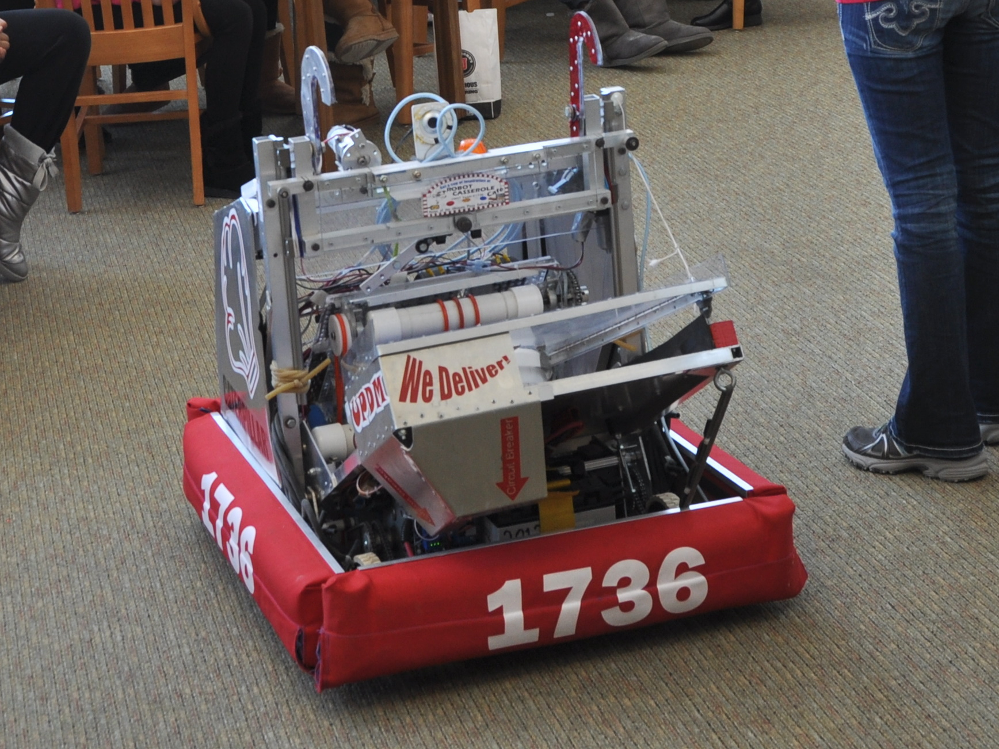

Portfolio
-

ESC
For my senior project at MSOE, we built a cane to help blind people by converting data from many sensors to haptic feedback.
-

FRC Team 1736
During Highschool I participated in FIRST Robotics, as part of the team Robot Casserole. from years 2010-2013
-

General Coding
My primary focus is with writing/maintaining code. I have worked in Java, Javascript, Python, C, C++, Labview etc.
-
TDAI
Thrill Digger is a minigame in Skyward Sword similar to minesweeper. TDAI is a piece of software I designed to play that game.

Mods and Extentions
Some of the code I write is either a modification of someone elses code, or an extension to existing code.

Spreadsheets and Papers
With a passion for learning about things, it's not uncommon for me to gather large ammounts of data about those things.